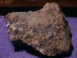
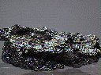

Saturday, February the 7th, 2004
back to: title, date or indexes
Those of you who—unaccountably—have not yet tried out Wednesday's recipe (see below, 4th February) may wish to take on board the following letter from reader Glyn Webster.
Would bismuth be an acceptable substitute for titanium in your latest recipe? I've alphabetically arranged my jars of substances, as Dobson suggested, so I've found I've been using a lot of bismuth in my cooking recently. (My jar of air is now completely empty, so that I cannot get the lid off to put more in.) Bismuth, although it is stodgy (number 83 on the periodic table, right after Lead), is widely recognised to be edible, even good for the digestion. It is the major ingredient of the popular American indigestion remedy Pepto-Bismol, and health-conscious hunters shoot their cirl bunting, moorhen, capercaillie, linnet or pukeko with bismuth shot. I'm not sure the same can be said of titanium.
If you decide to follow Glyn's advice, please examine with care the visual aid below:

Bismuth (left) & Titanium (right). One of them is chewier.